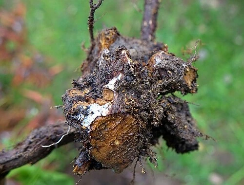

烂根
根变软腐烂
这是与该表现相符的一种可能原因，请结合下方特征核对。

先看哪里
将盆从套盆里取出，看看底部是否积水。轻触可见的根，记录哪些仍有弹性，哪些轻碰就脱皮。
怎样检查盆栽，避免再次伤根
先在原处检查，把手指探入干燥表土下方，再提起内盆，看看套盆里有没有积水。植株都可能表现为萎蔫，但根团已经湿透和盆土轻而干燥，需要采取不同的处理。
如果根团能轻松滑出，用手托住底部，检查外侧露出的根。不同植物和栽培介质会让健康根呈现不同颜色，判断时更应看根是否结实、外皮是否完整。保留摸起来结实的根。
可能原因与下一步
长期积水会使根缺氧。检查排水孔，倒掉托盘里的水，等盆土达到该植物适宜的干湿程度再浇。
怎样区分相似问题
根色会因物种和基质而异。轻触一小段露出的根，若外层软烂、一碰即脱，比单凭褐色更能说明组织受损。
现在可以做什么
确认内盆能自由排水，倒掉套盆里的积水。如确需换盆，保留坚实根系，用洁净工具处理已明显腐烂的组织。
接下来观察什么
留意是否出现坚实的新根尖，以及叶片是否停止萎蔫。若软烂延伸至植株基部，或改善排水后仍持续萎蔫，应趁尚有健康组织时进一步诊断。